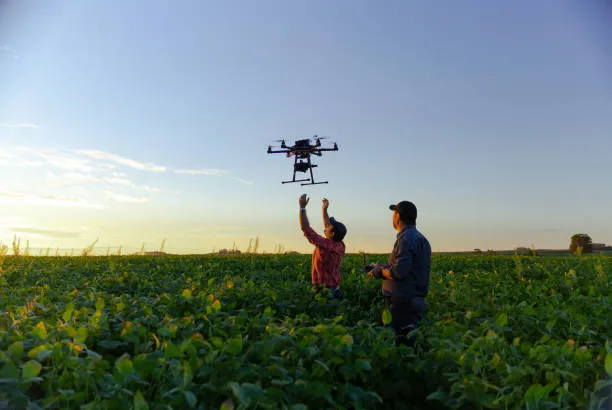
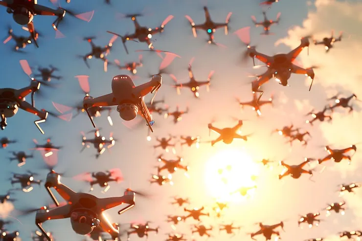

Our problem
Autonomous drones are becoming an integral part of modern operations across industries ranging from logistics and agriculture to surveillance and emergency response. As these systems are deployed in increasingly complex and high-risk environments, new challenges emerge that demand careful planning and coordination. Drones operating in swarms or over large areas face critical limitations, particularly regarding energy management. In prolonged or indefinite-duration missions, such as monitoring industrial sites, inspecting infrastructure, or observing natural disasters, the inability of drones to autonomously recharge leads to operational downtime, reduced efficiency, and potential mission failure. Furthermore, coordinating multiple drones introduces logistical challenges: drones must avoid conflicts, prioritize charging needs based on battery levels and task urgency, and optimize their flight paths to maintain uninterrupted coverage of the area of interest. Without an intelligent system to manage these factors, the potential of drone swarms is severely constrained, and human operators are burdened with complex supervisory tasks that could be automated.

Our Solution
The Air&Land Autonomous Charging Environment is designed to solve these challenges by creating a fully coordinated ecosystem where drones and charging stations communicate in real time. Our system integrates autonomous navigation, intelligent charging scheduling, and inter-drone coordination to ensure continuous operation of drone swarms. Each drone can autonomously identify when it needs to recharge, locate the nearest available charging station, and navigate there without human intervention. Charging stations are connected to a central command system that monitors drone energy levels, traffic, and mission priorities, enabling adaptive scheduling that optimizes overall swarm performance. The system is modular and scalable, allowing integration with unmanned ground vehicles or other autonomous assets for extended missions. By modifying commercial drones with custom software for autonomous landing and communications, we create a prototype that demonstrates practical and efficient management of multi-drone operations in real-world conditions.
The Market
Companies and organizations operating drone fleets stand to gain significant benefits from adopting the Air&Land Autonomous Charging Environment. By automating charging and coordination, businesses can reduce operational downtime, increase mission efficiency, and maximize the utilization of their assets. Continuous drone operation enables faster data collection, more consistent monitoring, and the ability to maintain critical services without interruptions. The intelligent system reduces the need for constant human supervision, lowering labor costs and minimizing human error. Moreover, the scalable and adaptable design allows companies to deploy it across various mission types, from infrastructure inspection and environmental monitoring to logistics and security applications. Ultimately, investing in such a system provides a competitive advantage by enabling reliable, autonomous operations that save time, reduce costs, and improve operational safety across a wide range of industries.

Key Features
- Continuous drone operation with minimal downtime
- Intelligent charging coordination for swarm efficiency
- Real-time monitoring dashboard
- Scalable and modular system design